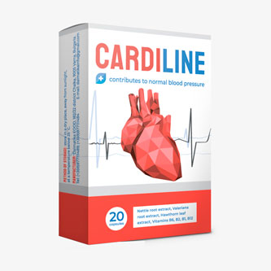

A magas vérnyomás néha évekig meg sem mutatja magát. A magas vérnyomást nem ritkán a fáradtság, az időjárás vagy a szervezet sajátosságának a számlájára írják. Fejfájás, alvási zavarok vagy légszomj esetén az utolsó, amire gondolnak, hogy ezek a tünetek a szívproblémákra utalhatnak. Jól vagyok, csak melegem van, – mondta anyukám, amikor megjelent a légszomja .
Ahogy visszaemlékszem arra a napra, amikor majdnem elveszítettem, mindig borzongás fut végig a testemen… Körülbelül 2 hónappal a szívroham előtt egyre fáradékonyabb lett és állandóan panaszkodott a fejfájásra. Ezenkívül a vérnyomása nem volt magas, 135/90 körül mozgott. A szívrohamja napján az anyukám jól érezte magát, el is ment a boltba. Később felhívtak a kórházból és közölték, hogy az intenzív osztályon van. Szerencsére minden rendbe jött.
A felépülés nagyon hosszú volt, és a szívroham bármikor jelentkezhetett volna még egyszer. A vérnyomása, ahogyan korábban is, 150/95 volt. Számos tabletta szedése után a vizsgálatok eredményei nagyon rosszak voltak, ami könnyen vezethetett veseelégtelenség kialakulásához is. Azonnal csökkenteni kellett a naponta szedett tabletták számát. De hogyan? Hiszen a tabletták nélkül azonnal romlik az állapot.

Az Európai Kardiológiai Szövetséghez fordultunk segítségért. Kenyeres Tamás kardiológus elmagyarázta nekünk, hogy nem szabad azonnal abbahagyni az előírt gyógyszerek szedését. Először is meg kell tisztítani az ereket és jó állapotba kell őket hozni. És csak ezután lehet fokozatosan csökkenteni a gyógyszerek adagját. Az erek tisztításához és erősítéséhez a „Cardiline“-t írta fel.
Anyukám elvégezte a kúrát és úgy egészében jobban kezdte érezni magát. Azóta minden reggel energiával teli ébred, elmúlt a fejfájása is. A mellkasi fájdalom, a légszomj és a fáradtság is teljesen elmúlt. A közérzete egyre csak javult, és a vizsgálatok eredményei azt mutatták, hogy végre normalizálódott a koleszterinszintje. A kezelőorvosa fokozatosan le is csökkentette a gyógyszerek dózisát. Hat hónappal később a kardiológus tanácsára anyukám még egy Cardiline kúrát elvégzett.